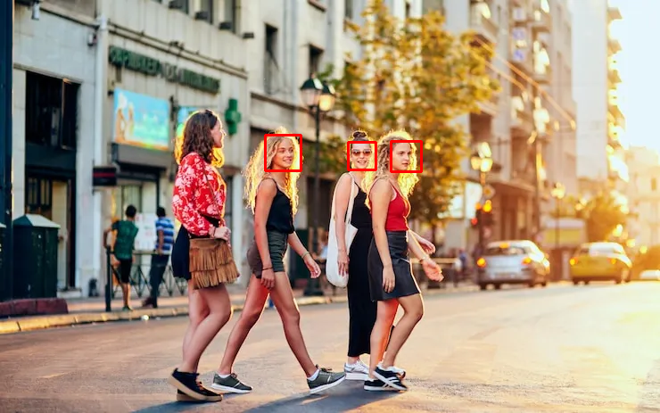
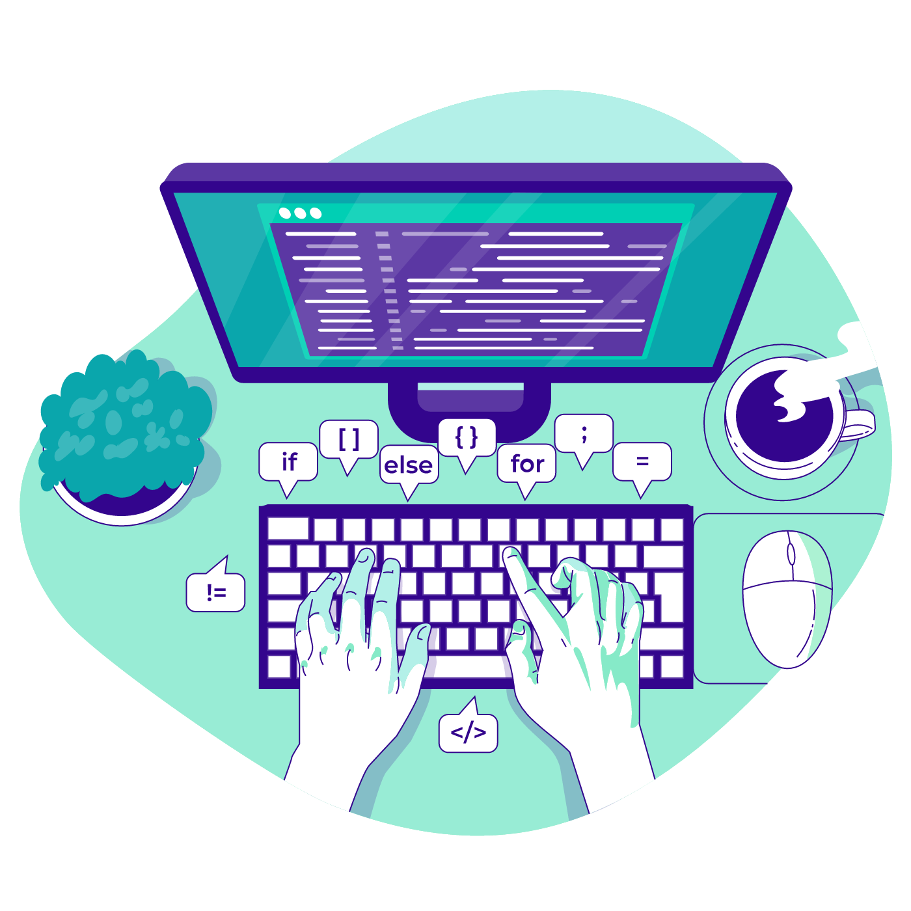

Premier projet en équipe, codé en C++ et en orientée objet. Ce projet de sandbox consiste à gérer les différents types de matériaux et leurs interactions entre elles.
Jeu de lancé de dés aléatoires entre deux robots régissant leur déplacement. Codé en C++, ce programme fait intervenir des "fork" afin de dupliquer les joueurs et les faire communiquer entre eux par un tube.
Programme visant à comparer plusieurs méthodes de machine learning afin de prédire avec le plus d'exactitude la condition physique des personnes en fonction de leurs caractéristiques physiques. Transformation des données brutes en données utilisable par les algorithmes.
Petit projet en vision par ordinateur permettant au programme de reconnaître un visage sur un photo ou un flux vidéo à l'aide d'une cascade de Haar.


Étudiant en 3e année du cycle ingénieur de Télecom Saint-Étienne et anciennement en classe préparatoire PCSI/PC au lycée Carnot à Paris, j'ai des connaissances solides en science (physique, chimie, mathématique, ...) et mon profil est axé sur le développement de logiciel.
J'apprends en construisant : chaque projet est une occasion d'explorer de nouveaux outils, de casser des choses, et de comprendre pourquoi.
En dehors du code, je pratique du sport notamment la callisthénie. Je cherche un stage de fin d'étude de 6 mois à partir de fin février.
Une question, une opportunité ?
Je suis ouvert aux opportunités de stage et aux collaborations sur des projets intéressants.